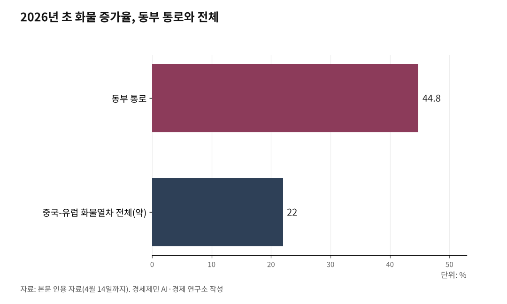

[중국철도④] 중국-유럽 화물열차 동부 통로, 올해 44.8% 급성장
만저우리·쑤이펀허·퉁장 세 통상구, 러시아 시베리아철도로 바로 붙는다
러-우 전쟁 귀환화물과 미중 관세발 대유럽 수출이 성장을 밀었다
쑤이펀허 해륙복합 루트, 인천·부산에 기회이자 경쟁 압력
중국-유럽 화물열차(中欧班列, 중유반열) 동부 통로가 올해 가파르게 컸다. 2026년 들어 4월14일까지 통행량이 2000편을 넘었고, 발송 화물은 20만804TEU로 전년 같은 기간보다 44.8% 늘었다.

같은 기간 중유반열 전체 성장률은 약 22%였다. 동부 통로가 평균을 두 배 넘게 앞질렀다.
러-우 전쟁이 만든 귀환화물
동부 통로는 만저우리(滿洲里)와 쑤이펀허(綏芬河), 퉁장(同江) 세 통상구로 이뤄진다. 세 곳 모두 카자흐나 몽골을 거치지 않고 러시아 시베리아횡단철도에 바로 붙는다.
2022년 러시아-우크라이나 전쟁 뒤 서방 제재로 러시아 무역이 철도로 몰렸다. 중유반열 전체에서 러시아 방향 비중이 약 80%에 이른다는 분석이 나온다(연합뉴스·차이신 2026년 3월).
만저우리가 최대 수혜자다. 2025년 이 통상구를 지난 중유반열은 4867편, 그 가운데 귀환열차가 2977편으로 전국 1위였다. 화학비료와 목재, 철정광 같은 러시아산 자원이 주로 실렸다.
구조 변화는 더 깊다. 2025년에는 귀환열차가 출발열차를 처음으로 넘어섰다. 러시아 방향 화물이 일시적 현상이 아니라 자리를 잡았다는 뜻이다.
러시아 극동항도 몫을 했다. 블라디보스토크와 나홋카항이 중러 무역 급증으로 포화에 빠지자, 일부 화물이 만저우리 육상 통상구를 통한 철도로 옮겨탔다.
2025년 9월 폴란드-벨라루스 국경이 보름간 닫혔을 때는 동부 통로의 대안 가치가 드러났다. 중유반열이 폴란드 마와셰비체 허브에 몰리는 구조에서, 일부 화주가 물량을 동부 통로로 분산했다.
미중 관세가 밀어낸 대유럽 수출
두 번째 동력은 관세다. 2026년 1월 미국의 추가 대중 관세 뒤 중국 수출업체들이 대유럽 수출을 앞당겼다.
동부 통로의 출경 열차는 전년보다 47.5% 늘었고, 출경 화물량은 18만1200TEU로 41% 뛰었다. 해운보다 빠르고 일정이 예측 가능한 철도로 전자제품과 신에너지차 부품 같은 시간에 민감한 화물이 몰렸다.
2024년부터 이어진 홍해 위기로 수에즈 운하 해상 운임이 불안한 것도 철도 경쟁력을 키웠다. 중국의 2026년 1분기 대외 무역은 전년보다 15% 늘었고, 무역 자체의 반등이 철도 수요를 떠받쳤다.
가장 젊은 통상구, 퉁장의 부상
세 번째는 퉁장이다. 2019년 중러 헤이룽장 철도교가 놓였고 2023년 중유반열이 처음 다녔다. 중국에서 가장 젊은 통상구다.
퉁장은 유럽까지 철도 거리가 쑤이펀허보다 809㎞ 짧고 시간도 10시간 준다. 이 지리적 이점이 화물을 끌어당긴다.
가무쓰-퉁장 철도 확능 공사도 진행 중이다. 총연장 258.25㎞로, 완공되면 취급 능력이 연 1884만t에서 3721만t으로 세 배 커진다.
2026년 3월에는 퉁장 특대교(길이 1만435m) 빔 가설이 재개되며 공사가 눈에 띄게 나아갔다. 이 가시적 진척이 화주의 퉁장 루트 선택을 자극한다.
통관·디지털이 뚫은 병목
네 번째는 통관이다. 세 통상구 모두 디지털 통상구 시스템을 들여 세관과 국경검문소, 철도국의 정보를 연동했다.
만저우리역은 지능형 인식 체계로 열차 한 편 처리 시간을 과거 10분에서 1분 안으로 줄였다. 퉁장북역은 환적 시간을 2시간 이상에서 25분 미만으로 단축했다.
퉁장북역은 용문기중기를 십여 대에서 25대로, 운전 인력을 13명에서 60명 넘게 늘렸다. 늘어나는 물량을 감당할 처리 능력을 갖춘 셈이다.
이런 효율화로 동부 통로 전체 운송 효율이 약 10% 올랐다(중국철로 하얼빈국그룹).
환황해와 한국의 과제
동부 통로의 급성장은 한국과 맞닿는다. 쑤이펀허는 러시아 그로데코보와 이어져, 부산항에서 나홋카를 거쳐 쑤이펀허 내륙컨테이너기지(ICD)에 닿는 해륙복합 루트가 이미 그려져 있다.
이 구상은 새롭지 않다. 2008~2009년 부산항만공사와 쑤이펀허시, 러시아 극동운송그룹이 쑤이펀허 ICD를 거점으로 한 해륙복합 루트에 합의했다. 동북3성 화물의 내륙 이동을 다롄까지 1700㎞에서 270㎞로 줄이는 그림이었다.
기회는 뚜렷하다. 중국 동북3성 화물이 동부 통로로 유럽에 가는 흐름에 한국 가전과 자동차 부품, 소비재를 얹는 모델이 현실성을 얻는다.
경쟁 압력도 있다. 동북3성 화물이 다롄항 해상 대신 퉁장·쑤이펀허 직결 철도를 고르면, 다롄항을 거치던 부산항 환적 물량이 줄 수 있다. 이 구상의 자세한 그림은 별도 시리즈 '환황해 철도망의 현실과 미래'에서 다룬다.
※ 이 기사는 AI 프로그램 클로드를 활용해 작성했습니다.

참고문헌
· "2026年中欧班列"东通道"通行量突破2000列", 黑龙江省人民政府, 2026.4.15., https://www.hlj.gov.cn/hlj/c107856/202604/c00_31933270.shtml
· "中欧班列"东通道"通行量突破2000列", 中新网, 2026.4.15., https://www.chinanews.com.cn/ydyl/2026/04-15/10604093.shtml
· "2025年满洲里口岸进出境中欧班列4867列", 人民网 内蒙古, 2026.1.17., http://nm.people.com.cn/n2/2026/0117/c192247-41475015.html
· "满洲里铁路口岸首季回程中欧班列位居全国第一", 科技日报, 2025.4.23., https://www.stdaily.com/web/gdxw/2025-04/23/content_329630.html
· "1∼2월 中-유럽 화물열차 운행 32% 증가…"중러 무역이 80%"", 연합뉴스, 2026.3.20., https://www.yna.co.kr/view/AKR20260320088900083
· "GLOBALink | Jiamusi-Tongjiang Railway capacity expansion project resumes", 新华网, 2026.3.20., https://english.news.cn/20260320/54924daadfda4c119487ac85ba95ea35/c.html
· "同江铁路口岸进出口货物超千万吨", 科技日报, 2025.6.25., https://www.stdaily.com/web/gdxw/2025-06/25/content_360347.html
· "China's foreign trade up 15 pct in Q1 2026", Global Times, 2026.4.14.
· "부산항, 대륙 진출 프로젝트 <상> 한·중·러 물류연결 첫발", 국제신문, 2009.2.20., https://www.kookje.co.kr
※ 이 기사는 인공지능을 활용해 작성했습니다.
관련기사
- [중국철도⑤] 중국 철도의 두 얼굴, 같은 나라 다른 시스템
- [중국철도③] 중국-유럽 화물열차, 유라시아를 세 갈래로 관통한다
- [중국철도⑥] 한국이 들어선 국제 철도 통로는 다섯 가운데 둘
- [중국철도②] 중국 철도화물 16억t, 석탄 빼고 다 늘었다
저작권자 © AI경세제민 무단전재 및 재배포, AI학습 및 활용 금지